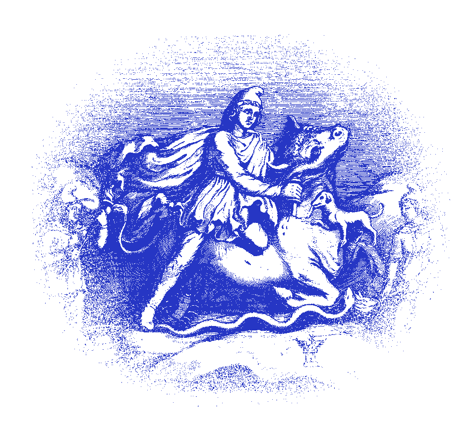
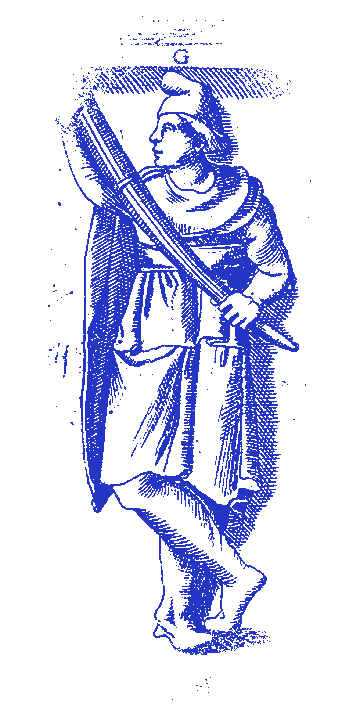
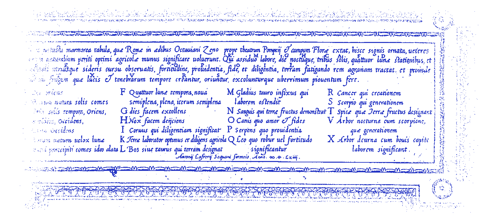

ミトラエウム
Mithraeumtools for the inner chamber
A modal editor, a terminal agent, a browser workspace and the engine that runs their models: C instruments, libc and nothing else. No cloud, no telemetry, no daemon.

hakm 109K · 42,117 lines of C
Three instruments, one chamber.

update_check=0 stops it). Everything else goes to the provider you pick, or nowhere with a local model.recorded from the real binaries · hako-sho (3B) on an 8 GB i3 · waits shortened, edited for length
One line, each instrument.
Each installer fetches the latest release for your OS and arch, checks its sha256 and puts the binary in ~/.local/bin. Where there is no release binary (iSh is 32-bit x86) it builds from source. No package manager, no daemon, no telemetry.
# the agent, the editor, the engine curl -fsSL https://mithraeums.github.io/hako.sh | sh curl -fsSL https://mithraeums.github.io/hake.sh | sh curl -fsSL https://mithraeums.github.io/hakm.sh | sh hakm pull hako-sho # 3B weights, from Hugging Face hako --serve # studio, already inside hako # or with Homebrew brew install mithraeums/tap/hako mithraeums/tap/hake mithraeums/tap/hakm
Local model, zero config
hakm pull hako-sho, then hako. The model stays resident in a hakm subprocess: no key, no :login, no cloud round-trip.
14 cloud providers
Claude and ChatGPT sign-in, Copilot, GitHub Models, OpenRouter, Nous and nine more. :login <name> walks you through.
Your machine is the server
hako --serve is a browser UI from the same binary, and :remote on puts your terminal on your phone. Files and keys stay on your machine.
Self-update, sha-checked
hako --update pulls the latest release, checks its sha256 and swaps the binary in place.
Each repo’s README is its manual: hako ↗ · hake ↗ · studio ↗ · hakm ↗
Behaviors for hako-code, by name.
Each skill is a folder in mithraeums/skills: a SKILL.md and any helpers, markdown only, so they work in Claude too. hako-code loads them on startup. Open a PR to add yours — the rite is the README.

Latest from each chamber.


The model's loss, redrawn by the coordinator after every block. What it writes after each one.